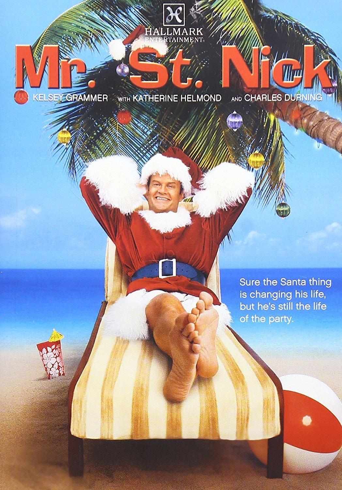
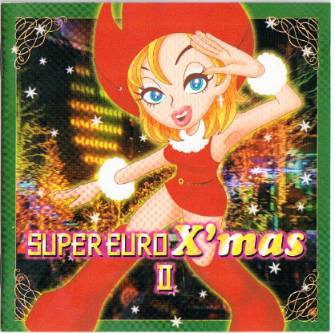

Movies
The Star Wars Holiday Special
A large swathe of the original Star Wars cast reunites for a nondenominational intergalactic "Life Day" with Chewbacca's family. Released in 1978 and immediately disgarded as non-canon (as well as actively censured by Lucasfilms for its quality), this trainwreck in slow motion exists for the pleasure of the modern day's audiences thanks to enterprising individuals who had the common sense to record the TV special onto video tapes for archival purposes. Viewable on Youtube!

Mr. St. Nick
Enter Kelsey Grammer, star of Cheers & its similarly successful spinoff Frasier, playing the eponymous character of the latter in both. The guy is probably loaded. The year 2002 rolls around and you know what he does? He decides to star in a direct-to-video Christmas Movie. This movie is a fever dream at best, inundating the viewer with some arcane monarchist successionism of the Santa Claus line intermingled with the heir-to-be's big business & beach lifestyle. What truly unsettles me is the level of detail put onto Kelsey Grammer's feet in the poster. If you really want to watch this, you could easily Lose eighty seven minutes of your life you'll never get back by watching it on Tubi.
Music
Have A Very Bass Christmas
Picture if you will: You are born in the 90s. You are most likely completely culturally and geographically removed from miami bass music beyond the heavily sanitized versions of it brought to you in the form of Quincy Jones' musical score for "The Fresh Prince of Bel Air" and Jock Jams. Welcome to "A Very Bass" Christmas, royalty-free Christmas songs given an extremely specific and niche treatment to be enjoyed in a way that you will blast in your car (albeit tonally dissonant to be played in any vehicle manufactured after the year 1996). The errant question of "Why was this made" is drowned out by the songs going harder than they have any right to. I do not know who this is for, but I know whoever they are, they are bumping it very loudly. An enterprising individual has the entirety of the ablum uploaded as a single video on Youtube.
Super Euro X'mas II
This album requires a certain level of context that will make you think I'm off my rocker or at least, that I am someone with so much time on my hands that I can indulge in these cross-media explorations. Super Eurobeat is a genre largely perpetuated by a Japanese cartoon series called "Initial D" that is mostly about teenagers with attitude driving cars in cool ways in the Tokyo countryside. They play music that sounds like sped-up Italodisco. Italodisco is a more techno-adjacent byproduct of Disco that was born out of underground music in the 1980s. This album is a high energy, egregiously saccharine and downright corny dance techno album featuring riffs on classic Christmas songs. It rocks. There's another 3-4 albums of nothing but this kind of thing. It is insane.......ly good.
TV Specials
We Wish You A Turtle Christmas
This is garbage. During the early 90s when everybody and their mother was into Ninja Turtles for some reason, some genius producer had the idea of making a 21 minute nonstop musical experience where costumed men masquerading as the aforementioned turtles sing Christmas songs converted to be about their inner crisis of forgetting-and-then-having-to-get a gift for Master Splinter, their talking sewer rat sensei. The musical scores range from scenes of random street children giving the turtles an overproduced backing instrumentation to their songs, to the lazy linguistic pun of "rapping" about "wrapping". I cannot stress how bad this is - it is actively painful to watch, for this reason I cannot suggest watching it enough!